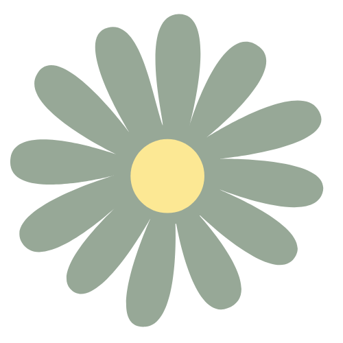
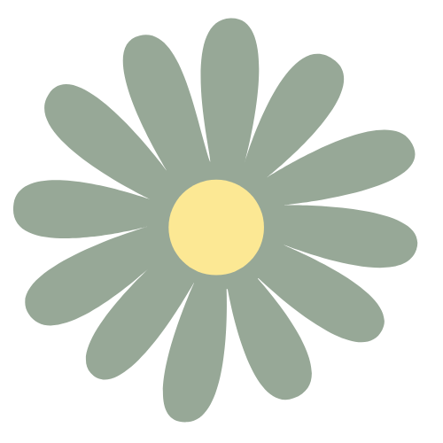

O site Green News: Global Peace (GNGP) foi desenvolvido por duas programadoras e designers gráficas apaixonadas por relações internacionais e desenvolvimento sustentável. O site começou como um projeto escolar que, felizmente, tomou grandes proporções e hoje é referência na área jornalística sustentável. O GNGP foi esquematizado e projetado por Caroline Fantinate de Assunção e Beatriz Gagliano Silva, programado por Caroline e estilizado por Beatriz.
Caroline Fantinate de Assunção, 18 anos, é formada em Desenvolvimento de Sistemas pela Etec de Taboão da Serra, e sua paixão por sustentabilidade e paz global começou na escola, onde aprendeu mais sobre o assunto e foi incentivada a explorar a área. Já Beatriz Gagliano Silva, 18 anos, também é formada em Desenvolvimento de Sistemas pela Etec de Taboão da Serra, mas seu interesse pelo assunto veio de casa, pois teve influência e apoio familiar. Quando surgiu a ideia do projeto, ambas se empolgaram e viram uma oportunidade de informar as pessoas sobre a ONU e divulgar as ações internacionais em prol da paz mundial e do cumprimento das ODS's.